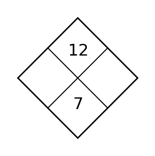

Algebra 1 · Unit 5 · Section 5.2 · Investigation
Product–Sum Factoring Lab
Factoring Trinomials
Learning Target: Students will factor quadratic trinomials using patterns, products, sums, and structure.
Directions
- Work with a partner unless your teacher assigns a different grouping.
- Show the evidence you use, not only the final answer.
- When a representation changes, keep the meaning of the quantities attached to your work.
- Revise an answer if later evidence shows that your first claim was incomplete.
Part 1 · Product-Sum Puzzles

Find the two missing numbers, then connect them to factors of $x^2+7x+12$.
Part 2 · Factor the Trinomials
Factor each completely.
$x^2+9x+20$
$x^2-x-12$
$2x^2+7x+3$
Part 3 · Reverse Check
Choose one factorization and multiply the binomials to recover the original trinomial. Circle where the middle term comes from.
Synthesis
Explain why the same two numbers must satisfy both a product condition and a sum condition.